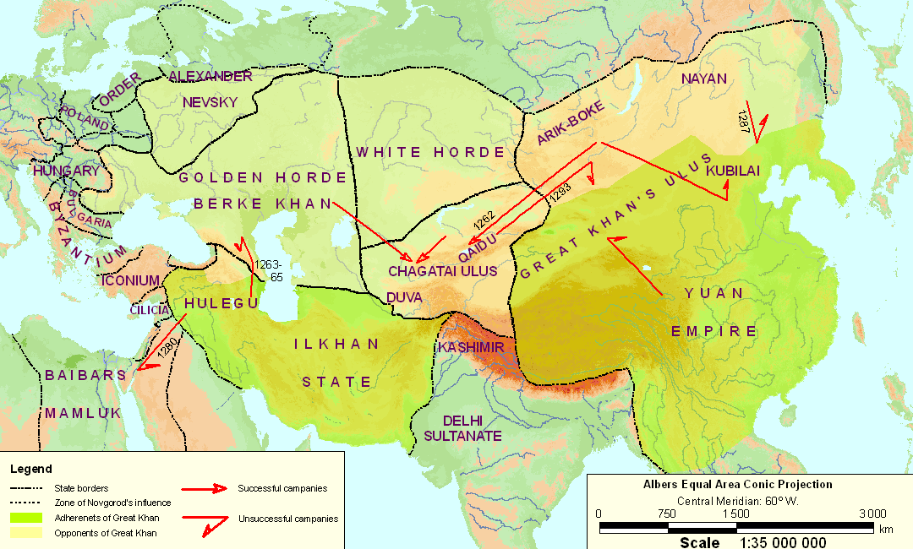

Gumilev L.N., Searches for an Imaginary Kingdom: The Legend of the Kingdom of Prester John (Cambridge University Press. 1988)
Map 4. Disintegration of the Mongol Ulus (1260-1300) (Russian versian)
|  |
 |
General note. In the course of the preceding century the world has been transformed. In place of ethnic and cultural blocks, coalitions based on political clashes have arisen. At the headquarters of the Great Khan Kubilai, Buddhists, Christians of all confessions and Confucians engage in hand to hand clashes, and against them Muslims, Nestorians, followers of the Black Faith also stand forth. Religious allegiance ceases to be an indicator of political attitude throughout the Mongol Empire, but this is a slow process and in particular cases it is this which causes insurrections and punitive expeditions. The same picture is found on the western borderlands of the continent: the Templars enter into contacts with the Muslims against the Nestorians and Armenians; the Ghibellines seek aid from the Saracens and the Greeks against the Papal throne; the Popes enlist the pagan Lithuanians as allies against Christian Rus`; only Castille carries out its reconquest in a principled fashion, though here there is evidently a simple coincidence of the concerns of the Christian world and of nationalism. Ethnic unities arise in place of the collapsing confessional ones, i.e. a slow crystallisation of nationalities takes place signifying the advance of a new period with its own rhythms of development.
Tribes are not shown in the Mongol ulus as they had ceased to exist, being swallowed up by the hordes. Subsequently, when the hordes disintegrated, tribal unions again arise, but different ones. Although some of them take the ancient names, their meaning is different and relates to a new historical period starting in the fourteenth century and ending at the end of the nineteenth.
Links
Follow pages refer to this map:
- Gumilev L.N. Searches for an Imaginary Kingdom: The Legend of the Kingdom of Prester John. The Trefoil of the Mouse-hole. 12. Two in One.
- Gumilev L.N. Searches for an Imaginary Kingdom: The Legend of the Kingdom of Prester John. The Trefoil of the Tree of Thought. 14. A Space-Time Scheme.
Map was created by A. Rodionov in 2008 with help by the original procedure (in Russian).
Эта страница была последний раз обновлена 08/29/08.